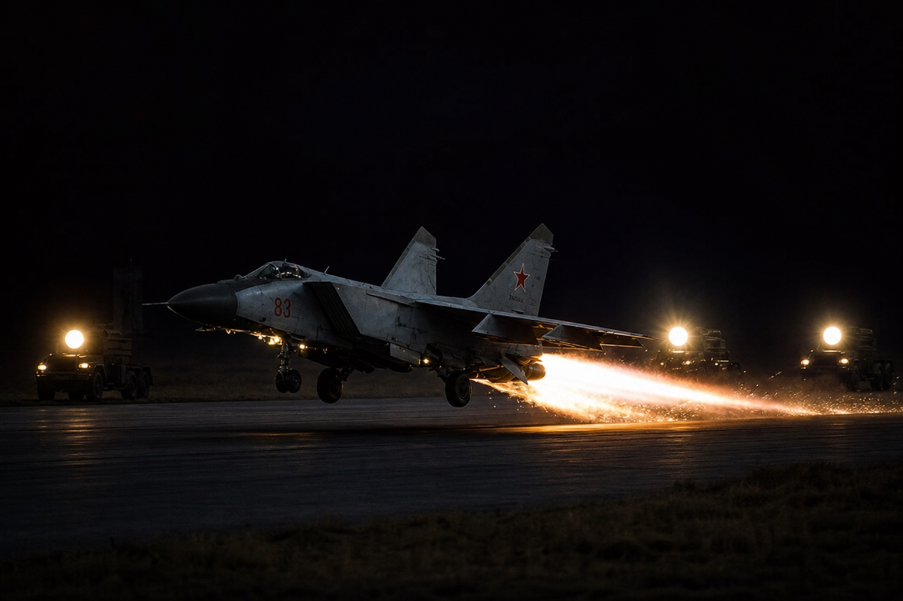

Часть 1
Глава 3 — ночные МиГи у карьера

- Кажется, клюет, - прошептал Воха, щурясь от заходящего солнца.
Валёк поднял удочку с камня и осторожно подергал. Поплавок ушел под воду. Он замер на секунду и стал потихоньку вытягивать.
- Уж больно легко, - засомневался он, не прекращая тянуть.
На крючке блеснула уклейка. Маленькая, сантиметров восемь, не больше.
- Опять кошке, - разочарованно протянул Валек.
За все время они поймали всего пять мелких рыбешек. С этой — шесть.
- Не выросли, - вздохнул Воха.
- Ты о чем?
— Это ж карьер был, Валёк, ты разве не знаешь? Этой весной его залило – дамба не выдержала. Откачивать бесполезно - там глубина... – Он широко развел руки. - На дне до сих пор экскаватор и бочки с солярой. Решили не трогать.
- Откуда я знаю, что тут у вас было весной? Забыл, что ли, что я киевлянин? Я приехал на каникулы, к бабке, неделю назад.
Валек снял с крючка рыбку, и снова наживил червячка. Поплевал.
- А, может, пойдем? - Сказал Воха. - Только время теряем!
- Не, давай еще полчаса… Я давно не ходил на рыбалку. Вдруг поймаю еще?
Он закинул удочку и уселся на камень.
Удочка у Вохи была магазинная, из бамбука. И поплавок — покупной. Хотя в деревне знал всякий: покупать поплавки в магазине — это деньги на ветер. Взял перо, ободрал опахало — вот тебе поплавок. Режь велосипедный ниппель колечками и продевай под них леску.
- Так говоришь - на дне бочки с соляркой? То-то я думаю, почему на воде пятна? - Протянул Валёк, не сводя глаз с поплавка. – Ну, теперь – ясно. А я-то думал, что деревенские моют машины… Слушай, а откуда тут рыба?
- Так сказал же – речка прорвала дамбу весной, - Воха взял удочку и снова подергал.
Поклевки не было, и он вернул ее обратно на камень.
– Хлопцы ловили, я видел. Мелкая, правда. Но, я так думаю: на следующий год крупная вырастет. Вода до дна – ясен пень - не промерзнет. Глубина – ого-го!
Валёк тоже подергал свою. Поплавок дернулся и вынырнул на поверхность.
- Говоришь – глубоко?
- Метров семьдесят будет. Карьер-то был, знаешь, какой… Гранит на Крещатик возили. И даже - в Москву!
Валек задумался, где на Крещатике, может быть, гранит из этой ямы, сейчас залитой водой.
- Знаешь сколько тут вынуто? Возили целыми днями. А грохот стоял!..
- 70 метров, - вслух размышлял Валёк, — это что? Допустим, десятиэтажка… два с половиной метра этаж. Плюс перекрытие, плюс потолок – это… ну, тридцать метров. Еще крыша. Выходит, двадцать этажей там, внизу?
Воха почесал затылок. С математикой он не дружил. Поэтому некоторое время он морщил лоб, а потом подтвердил.
- Что-то вроде того.
Некоторое время они молчали, представляя под водой высоченную башню, крыша которой покрыта водой. А вокруг плавают рыбы.
Тишину нарушал только стрекот, без которого не бывает украинского лета: цикады, кузнечики, сухая трава. Ни плеска, ни ветерка.
Солнце уже закатилось, и над карьером появилась луна. Низкая и, пока еще, прозрачная, бледная.
Издалека пахнуло - разная вонь в это время являлась неотъемлемой частью того океана, которым мы дышим.
- Темнеет, - парень, разминая, пощелкал костяшками пальцев.
Валёк подергал удилище.
- Здесь торчать бестолку. Ладно. Пошли?
«Как бы Валёк не стал при хлопцах прикалывался: типа – привел, а рыбы и нет ни фига!» - Забеспокоился Воха.
И солидно объяснил киевлянину.
- Жарко, вот клева и нет.
Тот кивнул.
- Ну так как, ты идешь? Или что?
Они осмотрели берег, на котором прорыбачили целых полдня, — не забыли ли что? — и полезли из котлована наверх.
Валёк сел на траву.
- Посидим? – Предложил он, глядя на небо.
Воха положил снасти на землю, достал пачку „Примы“ и присел рядом с ним.
- «Прима» — значит первая, лучшая, - важно сообщил киевлянин.
Воха усмехнулся – на самом деле в этих сигаретах без фильтра лучшей была одна лишь цена.
Валёк без спроса вытянул сигарету из пачки, сунул в рот и придвинулся к Вохе, ожидая, когда он даст прикурить.
- Ты только губы с собой носишь?
Валёк нахмурился.
- Вообще-то я не курю. Просто сейчас захотелось. А тебе жалко, жадоба?
Воха пожал плечами и достал спички.
- Травись – мне-то что.
Некоторое время они молча курили.
Луна потихоньку поднималась к зениту. Её бледный свет, как свет люминесцентной трубки допотопных времен, заливал окрест мертвенным светом.
Издалека донесся нарастающий свист. Он набухал, густел, через минуту перешел в рев, потом к реву добавился треск. Ребята обернулись на звук.
- Ночные полеты, - со знанием дела сообщил Воха.
- Истребители?
- Ага. МиГи с Мокрянки.
- Это как - с речки?
Воха заржал.
- Скажешь тоже! Аэродром тоже так называется.
Два МиГа пронеслись над головами ребят. Они с жадностью следили, как истребители почти отвесно рвались в высь на длинных хвостах из огня.
- Ночью – красиво, - восторженно прокричал Воха. - У них моторы восходовские, - добавил с важностью он. — По два у каждого!
- Вранье! – Уверенно возразил Валёк, который собирался поступать в КИИГА. – Ракетный двигатель без окислителя не может работать! А у них вон какие уши по бокам от пилота.
- Ну не знаю, - обиделся Воха, - нам техники так говорили, когда мы к ним за Массандрой ходили.
- За чем ходили? – не понял Валёк.
С аэродрома снова послышался нарастающий свист – следующая пара МиГов выходила на старт.
- За Массандрой – в МиГах спирта полно. Вот когда ремонтируют - его и сливают. Жёны даже Микояну писали, что мужья на службе спиваются. Но он ответил – если для армии нужно – он зальет в МиГи коньяк!
Небо осветилось — два новых ярких хвоста взмыли вверх.
- А как же они видят, там же темно?
- Не боись – просто отсюда не видно. Там на полосу выезжают четыре ЗиЛа. Из нашей части с Леваневского – там видел, на повороте справа ворота? Ну, вот. Они с прожекторами. И когда МиГи выезжают на старт, им дают команду светить. А как самолеты взлетят – сразу гасят. Маскировка, чтобы не засекли!
- На ЗиЛах?
- А то на чем же – машина века!
Валёк на секунду задумался, осмысливая каламбур. Потом хмыкнул.
- Машина века, сказал? Хорошо!
- Ну да, а чего мучаться-то. Ездит – и ладно. Мы ж не на Западе, чтобы каждый год новую модель выпускать. Барство это, нас недостойное!
- Ты языком-то думай, что мелешь, - Воха враз стал серьезным.
- А я шо? Я ни шо.
Он заторопился, встал, поднял снасти.
- Ладно, пошли, засиделись. А то бабка будет ругаться.
- А ты улов ей отдай!
Они засмеялись и, поглядывая на самолеты, которые то и дело взлетали, двинулись по пыльной дороге на Леваневский поселок.
К краю карьера вышла овца. Бока у нее часто ходили, потому что она еще до обеда отбилась от колхозной отары и с тех пор моталась полдня по жаре. И вот вода – она совсем близко, почти под копытами. Овца ощущает прохладу и влажность под скалой, на которой стоит. Она видит воду, много воды, она вперилась в нее бешеным взглядом. Но спуск вниз не везде есть— берег — камень, осыпь, обрыв. Овца заблеяла тонко и нервно.
Но вдруг – чу. Она дернула ушами и повернулась на звук. Вскоре уже и человек смог бы услышать завыванье мотора. Машина приближалась, над проселком появилось уже зарево фар. Овца испугалась, подпрыгнула и убежала прочь, в кукурузу, поля которой доходили почти вплоть до ставка.
Подкатил ЗиЛ - прожектор.
Из правой дверцы выбрались двое, на них была повседневка – гимнастерки, галифе, сапоги. Пилоток не было, ремни болтались сантиметров на десять внизу живота. Главный закон армии, да и социализма вообще: хоть ты грязный, пьяный и рваный, но на плацу – нужно быть огурцом, хвост держать пистолетом. А когда ты один, со своими – то будь проще, и к тебе люди потянутся.
Солдаты что-то тащили из кабины наружу, но дело шло плохо. Водитель спрыгнул на землю и пошел помогать. В конце концов они выволокли наружу солдата. Он цеплялся руками за все, чего мог схватить, лягался, кусался, брыкался и отчаянно пытался влезть обратно в кабину.
Его стали бить. Старательно, сапогами, по голове, в пах и под ребра. Несчастный скрючился, защищая живот, но все тянулся к машине, словно только в ней он видел возможность спастись.
…В армии свои забавы и правила. Со стороны они выглядят дико. Но чужаков в армии нет - только свои.
Дедовщина расползлась по частям, как плесень по сырому подвалу. Офицеры довольны: дисциплина, строй ровный, уголки одеял аккуратно набиты — а что ночью происходит в казарме, офицерам лучше не знать.
Старики ощутили вкус власти. Новобранцы надо полтора года терпеть, а потом приходила их очередь – и они сами становились хозяевами части. Логика очень простая: я полтора года ходил под дедами — а чем эти лучше меня?
Слабых сразу ломали. Упрямых, гордых, тех, кто не хотел гнуться, гнобили. И у них оставалось всего лишь два выхода: либо ударить так, чтобы больше не трогали, либо повеситься.
Унижение перешло в ритуал. Побои — в привычку. Издевательство в удовольствие…
Сейчас, у ставка, который был недавно карьером, такого строптивого сейчас избивали, а он молча боролся за жизнь.
Но силы совсем не равны - с каждой минутой сопротивление слабло: лежа на земле под пинками солдатских сапог сдачи не дашь. В рот набилась земля, в глаза – грязь, только слышатся хриплые вздохи в промежутках между ударами.
Строптивый затих - его подтащили к краю скалы. Попинали еще — на всякий случай, без ярости и суеты – контроль, для порядка. Вялое тело от ударов переваливалось, словно мешок, голова глухо билась о камни.
- Хватит, - сказал шофер, отдуваясь и оттер пот с лица рукавом.
Двое других пинками перевернули лежащего, чтобы видеть лицо.
- А ну-ка, дай ему пару раз.
Его хлопнули по щекам. Ничего.
- Он готов.
Перекурили. Потом за пазуху набили камней, затянули ремень сверху хэбэ — туго, чтобы камни не выпали. И вниз столкнули, в карьер, в глубину. Тело вошло в воду без плеска - несколько расходящихся кругов и снова тёмная ровная гладь, в которой отражаются звезды.
— Каюк, — сказал один из убийц.
Все смотрели на воду: не появятся ли пузыри, не возникнет ли что-нибудь там, в глубине.
Было тихо.
- Крандец котенку, - наконец согласился водитель.
Потом еще с минуту внимательно смотрел он воду, и наконец успокоился.
— Поехали!
- Отвали, Аслан, дай отдохнуть. - Солдат вытащил помятую пачку «Астры», извлек последнюю сигарету, расправил её, как мог, и потянулся к товарищу за огоньком. – Слушай, а может, мы сами дойдем? Тут ведь рядом.
Его товарищ чиркнул спичкой по коробку, зажал ее в горсть и протянул к сигарете. Солдат шумно выдохнул дым.
— Хрен с вами, гуляйте, — водитель посмотрел на часы. — Но к шести чтоб были в дежурке. Я перед пиздОтой за вас впрягаться не стану. Скажу, что куда-то свалили. Оправдывайтесь сами потом.
И он кивнул на тихую водную гладь.
Водитель залез в кабину, двигатель рыкнул, из выхлопной трубы вылетело сизое облачко, и ЗиЛ запрыгал по ухабам к аэродрому.
Получившие часик свободы солдаты сели на камни и стали курить, передавая сигарету друг другу.
- Довыпендривался, – сплюнул один, кивнув на ставок. – Не мог, московская тварь, жить как все!
- Рот закрой! – Второй ударил в плечо болтуна. – Заткнись! Кто узнает - все на нас свалят. Я в дисбат не хочу!
- Так ничего же и не было! – Пожал плечами второй. – Скажу, в крайнем случае, что был в самоволке. Маринка мне все подтвердит, даже не думай! Я лучше на губе отсижу, если что!
Они подошли к краю, и снова посмотрели на воду.
- Не писай, никто ничего не узнает. Нас не видел никто.
Было тихо вокруг, только трещали цикады. И поверхность ставка была такой гладкой, словно сделали её из стекла…